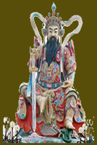

神的传说
 （ 修行者第二篇第十七集）宙心生命氏族至今仍是母系社会，其特征仍是王位的继承权传女不传子，传弟不 传子。 盘古消失后将王位传给女儿天王母后（亦称天后圣母），天后将王位让于其夫——天岩君。天岩君是第二代天皇，俗称天公。 第二代天皇的继承权是天后最宠的两个女儿，西王圣母，和小女儿号称美人王的九天玄女。此两女儿又将未来王位，即第三代天皇位，让给她们的丈夫玄龙大帝。玄龙大帝原是天国总侍卫，镇守天庭三十六宫、七十二殿的门户天龙门，其职为清都山水郎。 但玄龙生性散漫，天庭军政重务就皆由西王圣母一人承担。有古词为证：我是清都山水郎，天教懒漫带疏狂。
曾批几露支风敕，累奏留云借月章。
诗万首，酒千觞，几曾着眼看侯王,
玉楼金阙庸归去，且插梅花醉洛阳。
天王母后在佛门被称之为大光明王佛。或日月光佛其有十个女儿，即妙善、妙生、妙文、妙珠、妙霞、妙云、妙密、妙圣、妙青、妙莲。其中妙圣即西王圣母，妙莲即九天玄女。
远古时代，即商汤王以至黄帝，均认为九天玄女是中华部族的始祖，并称之为凤凰圣母，玄天女神、正义女神、战神。相传，古易、奇门遁甲、大六壬、太乙神数、神符灵咒均出自玄天女神之手。
盘古大帝开辟A点物质生存区之后，因丧失能量而沉入C点。在成劫期，大外孙女妙善率大量生命灵光进入A点继承祖业。在地球上建立了极乐园，国号大罗金仙国，定国都于地球最高点西藏高原。
但地球净土最麻烦的一件事就是，若想获人身，必行投胎之路，但一投胎，能量就丧失，而无法从漏点返回。另一弊端是，地球的时间速度极快，转眼就是万千年，生生死死息息不止，永远处于这种变化无常之中，不如漏点那边那样宁静、有常、如如不动。
妙善为大罗金仙王，深感不安。有心将地球上的众大罗仙女全部渡回漏点，但苦于能量丧失而不能重返。于是，召漏点那边的一个总想进入A点的巨灵，进入A点住胎。
此巨灵住胎后，为大罗金仙国王太子，名叫罗地干布。他高兴地接了王位，率众大罗仙女在地球上开山辟洞，沿海底下把几块陆地全通连起来。而大罗仙王则出家修行，炼足能量之后返回漏点之内。
大罗仙王涅盘之前，传罗地干布“一卷经”，要他率众大罗仙女按此法修行，以返故里。但罗地干布觉得这里自在好玩，有山有水，真山真景，比那漏点内的虚无飘渺强万倍。故而也不炼功，也不传功，只把一卷经扔到九霄云外。
妙善回天之后，努力在B点另辟一个极乐世界，准备接迎A点的众生。但无论是如何感召，罗地干布只是不理不睬，只顾与众罗仙游山玩水。
妙善眼看一批批大罗仙女因转世不止，造业不断，能量日趋衰减，一批批地坠入C点。于是赴天后宫上奏大光明王佛。佛下令将那该死的罗地干布及众大罗仙全部渡回。于是十妙女夜闯断魂关（漏点），进入了A点。
地球上的大罗仙众，忽见夜空之上出现十个大日，地球上的有形生命体纷纷开始死亡。急呼王太子罗地干布，于是太子布大罗阵与之对抗。太子名为左臂神弓，左手凌云虹光剑，其一度威震生命天河。他就是原清都山水郎玄龙大帝，进入A点后，死不回天，落个人间自在王。
十个大日被他击落九个，余下一个妙文潜回断魂关。落魄的九日只好住胎为狐、鸟、鱼、蛇，又几经周折转世，苦苦修行，终于有成，涅盘后返回断魂关。从此，天上下令将下界的大罗金仙国改国号为大罗刹帝国。罗地干布为罗刹王太子，众大罗仙女从此被叫为大罗刹女。而妙善却背了个黑锅，被人叫做大罗刹王。
此后，妙善拜托释迦牟尼佛，释佛足智多谋，曰：对迷痴的众生，只可善劝，不可强渡。
释佛转世下界（不是两千五百年前的那次转世，而是数百万、千万年前的一次转世），在一大树下修行（注：一转世住胎，能量皆失，只得从新修起）。
罗地干布知此人有来历，跃入大树前，曰：你费那么大的劲，修了那许多年，我只告诉你四句话，你便可开悟！
佛忙请教。罗地干布曰：“诸行无常，是生灭法。”释迦一听，大悟！此二句总括了世间法的一切真谛，于是忙问：下两句呢？
罗地干布曰：你佛门骂我大罗金仙是大罗刹，你要答应让我罗刹把你吃了，我就告诉你！
释迦为求真答应以身换。于是罗地干布曰：“生灭灭已，寂灭为乐。”释迦听罢，顿悟、彻悟了。此二句是总括了出世间法的一切真谛。于是爬上树纵身下跳以求一死。罗地干布举手擎住，归之于座，曰：你何事来此五浊恶世？
罗地干布是反意话，既然天上佛界骂我这地球王国是五浊恶世，罗刹世界，你还跑下来干什么？
释曰：应大罗刹王妙善之约前来渡你。
释佛顿悟之后，忆起了住胎前的往事，和下世的使命。
罗地干布曰：有何凭据？你又是如何识得妙善？
释曰：当初我去金毛狮子国向大日如来求学“无量法印”，行至御花园正逢两位妙龄童从这里涅盘返回。吾问：你两何名称？
其一曰：一切诸法空，云何问名字。过去法已灭，当来法未生，现在法不住，仁者问谁名？
其二曰：名名者悉空，名名不可得，欲求真实名，未曾所见闻。说名字语言，皆是假施设。
这金毛狮子国就是宙心，九妙下界大战玄龙时，遭神箭击杀堕入三恶道。余下一妙即妙文，主政宙心为大日如来。这妙文正是文殊菩萨，她是众佛之师，具足十二级能量，以后九妙修成返回时，分别具足九至十一级能量，但此九宫联手之后，其九宫阵也具足十二级能量。
当初玄龙应妙善之邀欲下界住胎投生，金毛狮子曾一路追截，守住断魂关口不让玄龙下界。但玄龙一心一味想去当王，哪里肯听文殊的劝阻，故夜闯断魂关，大战金毛狮子王，突破狮子国百万雄兵，破关而去。文殊追悔不及，只好怏怏而去。
以后又有大日邀九宫（即九妙），共闯断魂关，定要把玄龙及他的大罗仙一网打尽。但此一战，九宫皆落。
此时，金毛狮子王传释迦入宫，一是传他无量法印，二是欲令其下界渡玄龙。
释佛进宫行至御园，正逢妙善、妙生修成后返回。其一正是妙生，她正没好气，只听有人问她叫什么名，于是就抢白了几句。
妙生说的话是如下意思：什么都没了，还问什么名字！（她从凡世刚刚涅盘返回，已是一无所有穷到家了）过去的一切都灭了，未来怎样还不知道，眼下又是什么也没有，你还问个什么名呢？！
其二却正是妙善。
释迦曰：我三人就这样认识了，然后一同来至金毛狮子王宫。此时，大妙、二妙、三妙相会，三妙文殊已是佛王。妙善发誓曰：吾要将西方安乐世界开拓庄严，不渡尽三世六道众生誓不称佛号。
玄龙曰：事是如此，吾也听说，只是要有个凭据才是。
于是释佛从怀中拿出一把短剑交于玄龙，曰：识得此物吗？
玄龙持短剑与自身上的长剑一对，知道这正是信物虹光剑。于是无话可说，但又不甘心拜释迦为师，也不知这释迦倒底有多大本事。开口曰：你若帮我降住阿修罗王，我就拜你为师！
上一集说到释迦奉大日如来金毛狮子王之命以及观世音、大势至之托，下世住胎。此行的目的是为收降玄龙。
为收服玄龙，大日如来传了释迦“无量法印”，并叮嘱：唯此才能降住那孽龙。
观音却曰：硬打也不是办法，以前也不是没有打过。那群孽种大罗仙，越是打就越难渡。
又曰！我有一信物，你交与玄龙，他自会明白！言罢，取出短剑递与释迦。又曰：我有一咒，你必有用……此咒专降天魔。
那大势至什么也没说，只是恨死了那孽龙！不久前那场大战，九日被射，其也在其中。坠入三恶道住胎于白鲸，虽以后修成，为西洋女王，但那一箭之恨并未了断。心里暗想：我早晚要给他一排飞刀！就看他知趣不知趣。
这观音正是那妙善；大势至就是妙生。
此时，释迦已把信物短剑交与玄龙。玄龙验过之后别于腰间。
当初，在大罗刹王弃王位出家时，将大罗刹帝国的镇国宝剑凌云虹光中的长剑凌云，交给了罗刹王太子罗地干布。以后，大罗刹王修成，临涅盘时，召罗地干布于前。嘱曰：我走之后，你要好自为之。日后，会有人持此虹光短剑来寻你，此人即是你师。言罢，只见一片虹光，玄龙面前已没了大罗刹王。
此时玄龙佩着长短凌云虹光剑，已知面前坐着的即是本师。一想，刚才差点把他给吃了！然后却说：你若能降住阿修罗王，我就拜你为师！
释迦曰：附耳过来，为师传你一密咒……摩诃般若波罗密......
玄龙曰：此当真有用？你稍坐，我去去就来。言罢，纵身而去.......
片刻，玄龙高兴而归，口中不断：不错，不错！见释迦仍在树下打坐，忙上前叩拜：叩见本师释迦牟尼佛！
释佛要玄龙坐在身边，问道：打赢了？
赢了！还挺灵，没费劲……师尊，再传我点什么，传最高的法。
释佛曰：世间出世间最高的法就只一个，已经有人传给你了......
玄龙惘然：没听说过……
释迦曰：妙善走时，给你留下什么了？
玄龙左思右想：没留下什么？她一转眼就没了……
释佛曰：她没给你留下“一卷经”吗？你没看吗？
玄龙：是有一卷经，没看！早扔到九霄云外去了……
释佛：此一卷经就是世间出世间最高最妙法，是妙善亲证的。
玄龙：如今上哪儿去找那一卷经呢？
释佛：当初你扔时，我正打坐，正巧落入我手中。
话说一日释迦正在树下坐，只见阿修罗王怒气冲冲直奔释佛而来，其身后尚有一妙龄女子，也是嗔怒异常。
阿修罗王：以前是我找他打，现在是他带着大罗仙成天追着我打。佛陀慈悲，你看如何是好？！
释佛曰：此事好办，只须将这女子留给我用即可。
阿修罗王大怒：出家人还要什么女人？！
释佛：只此一法，别无它着！
阿：好！就留给你，三日之后，若他再追着我打，我就拿你示问！言罢，纵身而去，留下那女子，坐在大树下……
释佛用心语召玄龙，玄龙飞腾而至，只见佛陀身边坐着一绝世美人，异常妖艳。不觉奇怪起来……
释佛：你看这女子如何？
玄龙：不错！
释佛：给你为妃如何？
玄龙：师尊作主，弟子从命！
释佛：那就带走吧……
玄龙上前，将那小女子轻轻一提，纵身而去……
三日后，果然天界太平，天人与阿修罗言和休战。原来，那女子，正是阿修罗王的女儿。
在释佛调服玄龙期间，妙善去了西方继续开辟乐园，妙文在宙心。其余八妙各率其兵潜渡断魂关。
断魂关是一宠大漫长的洞，洞里有洞，洞里有山形势诡密的迷宫、如迷魂阵。进洞难进，出洞难出，绕来绕去也绕不出洞口。
八妙众出了洞口，分兵八路，铺天盖地冲杀下来。顿时，三界内大乱，各路罗刹纷纷举兵迎战。此时，却不见了玄龙——罗地干布。
原来，释佛已将其引入一密洞，正传其一卷经。而玄龙正在大定之中。正是：空不异色，色不异空之时……
这一仗不知打了多少万千年，玄龙在定中全然不知。释佛在洞口把关，不住点头：有成、有成。
待玄龙出定后，洞口不见了释佛，纵身行至世界屋脊，只见遍地佛兵……
此间西洋女王率白鲸族攻占了地中海以北，以西，又东进兵占了新疆、西伯利亚直打到昆仑山下。她到处觅玄龙，只是不见其踪，心中骂道：这蠢龙躲到哪儿睡觉去了？
西洋女王战绩辉煌。至今，在西欧雅典尚有她的神庙，被称为世界七大奇迹之一。而她则被称为战争女神，又名复仇女神。
世界共两大战神，一曰西洋女王，一曰东洋女王。东洋女王即九天玄女。
这边，东洋女王率天龙军攻下印度、西藏，但此两地是玄龙罗刹战团的精锐，久攻不克，东洋军损失惨重。待攻下两地之后欲东进回兵北上，但此时，西洋兵已从昆仑打到东海。
当初，天公有令，昆仑以西归西洋女王，昆仑以东归东洋女王。此时，东洋见西洋已将自己的地域占了，不觉大怒！而西洋以其势大拒不退兵。两军开始在东海、南洋作战。
玄龙正是这时，来到西藏，一看已是物是人非了。再一打探，罗刹帝国的版图只剩下地中海边上的波斯、北非，以及南北美、澳洲。
玄龙调波斯罗刹战团随其赴东海寻战西洋、东洋。
在南洋，玄龙军与玄女军相遇。但玄龙、玄女早已订婚。两人一见，没几句话，玄龙就与玄女合兵，偷袭辽南仙人岛。此举成功，西洋未防后边，原只是集兵在东海、南洋作战。 玄女、玄龙占了辽南、朝鲜、辽西连山。然后又南下西进打到昆仑。此时，大姐妙善出面调停，双方罢战。观音又让玄龙下令，大罗刹帝国解散！
由于仗打得太长，大狠，参战将士能量损失过大，一时都无法重返断魂关。只好都在地球上避一避了。这一避就是千百万年……
漫长的岁月消逝了人类的记忆，但永不消失的时间，却仍保留着历史的映印……
沦落下来的生命不忘回归，于是回归的传教就一代代留传了下来。
西洋女王告诉属下：圣母在天上开辟了乐园，只要念圣母名号就可归天。她又对东方人说：西天之上有净土，只要念观音就可归回。
东洋女王传下：要与天相应，去打坐持功便可回归，并传下连山古易、归藏易。
地中海南岸、西岸：只要礼拜真主大王就可回归天堂。